Layoff Detector
Is your job burning? We can smell it from a mile away. Let us introduce our tool that may warn you before layoffs happen.
The Question
Why should we care about predicting layoffs in the first place?
Alex's Story: What a Layoff actually means
Day Zero
On a sunny Tuesday 9:13 a.m, A calender invite titled "Quick Sync" appears in Alex's calendar.
By 9:15 a.m, Alex, a 50-year-old family father and a software engineer by heart, is sitting in front of his laptop, waiting for the meeting to start. The meeting starts and Alex's manager informs him that he is being laid off. Alex is shocked and confused. He has been working at the company for 25 years and has never received any negative feedback before. He worked in the company through good and bad times. He knows every client by name, every project inside out, and has been a loyal employee for years. HR call it "restructuring" and by lunch, Alex is packing his things and leaving the office for the last time, with his stuff stuffed inside a tiny cardboard box. He is now left with no job, no income, and no idea what to do next.
After one Month
The health insurance that covers his wifes ongoing cancer treatment will be terminated. Fortunatly, Alex has some savings, but they are not enough to cover the medical expenses and the mortgage for a longer period of time. While financial aid exists on paper, it's not enough to cover all expenses, especially for a family of four. The stress and anxiety of not knowing how to pay for his family's needs is taking a toll on Alex's mental health. He needs to ask for help from his friends and family, but he feels ashamed and embarrassed to do so. But there is no other option, and he has to swallow his pride and reach out for help.
After Three Months
Alex is struggling to make ends meet with gigs, the savings are running low, and the bills are piling up. He is working forty, fifty, sixty hours a week to keep everything together writing applications and supporting his wife, most applications are answered with silence or a templated rejection email. His identity and self-worth build over decades as "the guy who can fix anything" , "the guy people call when they face a problem they can not solve", "the one that gets things done" is now shattered. He stopped mentioning the search to colleques and friends, since you can only say "still looking" so many times ... His 17-year-old daughter is now working part-time on minimum wage to help support the family, but her grades are slipping, and she is struggling to keep up with schoolwork. His 9-year-old son is understanding that something is wrong, they are saving money and trying to help out, but he is too young to understand the full extent of the situation.
After Six Months
Alex finally finds a new job, but it's not in his field. He is working longer hours for less pay, and he is not satisfied with the work he is doing, but it pays the bills. At least his current job provides health insurance and he can now afford his wife's treatment and his mortgage, but he is still paying off credit card debt. Repaying the depts will take a long time, not even thinking about saving for his children's education or retirement. During this time, he thought about "ending it all" but only the thought of his family kept him going.
The Statistics about Layoffs we need to keep in Mind
SRC needs to be checked for accuracy and updated if necessary.
How could we help?
For some people, getting out of bed some mornings is the hardest thing on their list. People are not just numbers, they are human beings with families, responsibilities, and dreams. Getting laid off is not just a financial setback, it is a life-altering event that can have long-lasting effects on a person's mental health, relationships, and overall well-being. Someone with a family, with a mortgage, with a sick spouse, with children, with dreams and aspirations, can be completely derailed by a layoff. Here is where we come in, we want to help people like Alex, who are facing the uncertainty and stress of a layoff. Many people get blindsided by layoffs, and they are left with no time to prepare, no time to save, and no time to find a new job. If we can predict layoffs, we can give those people a chance to prepare... With enough time to save, to find a new job, to plan for the future, and to protect their and their family's mental health and well-being.
Therefore we ask the following questions:
RQ 1: Based on publicly available information, is it possible to predict whether a company had or is likely to have layoffs?
RQ 2: Assuming we are able to predict layoffs with public available information, can we also predict layoffs in a 3 - 6 month timeframe?
Where It Came From
We integrated data from three primary sources, Layoffs FYI, NASDAQ, and WARN (Worker Adjustment and Retraining Notification) filings, through a multi stage processing pipeline. The pipeline standardized data formats, resolved overlapping and duplicate records, and harmonized company identifiers to create a unified dataset for downstream analysis.
Source and methods
Layoffs FYI: Crowd-sourced global layoff tracker spanning multiple industries.
WARN Data: US legally-mandated filings for 2026 and historical records through 2025 (accessed via GitHub datasets and archive).
NASDAQ: Ticker listings for company identification.
Raw data: Obtained via direct CSV downloads and the yfinance library for financial data retrieval.
| Dataset Name | URL | Description |
|---|---|---|
| Layoffs FYI | https://layoffs.fyi/ | Crowd-sourced tracker (global, many industries) |
| WARN Data | https://web.archive.org/web/20260509102542/https://layoffdata.com/data/ | US WARN-act filings for 2026 |
| NASDAQ | https://github.com/datasets/nasdaq-listings | US WARN-act filings up to end of 2025 |
Access note: WARN data from layoffdata.com is paywalled (USD 2,000), but equivalent information is legally accessible through official state records.
Data Pipeline
Based on the collected data, the data processing workflow follows a structured sequence consisting of data cleaning and feature engineering stages.
graph LR
A["fyi_layoffs.csv
DD.MM.YYYY"]
B["WARNDatabase2026.csv
DD/MM/YYYY"]
C["WARNDatabaseMaster
MM/DD/YYYY"]
NORM["Normalize dates to
ISO 8601 & merge"]
A --> NORM
B --> NORM
C --> NORM
D["NASDAQ.csv
Tickers"]
UPPER["Uppercase company
names"]
DEDUP["Remove overlaps
(prioritize WARN)"]
MATCH["Match to tickers
(regex stemming)"]
NORM --> UPPER --> DEDUP
D --> MATCH
DEDUP --> MATCH
subgraph FEAT["Feature Engineering"]
FILTER["Drop missing
tickers"]
VALID["Remove conflicting
tickers"]
FETCH["Fetch financial data
via yfinance"]
MERGE["Merge quarterly
features"]
LABEL["Label layoff
event 0/1"]
FILTER --> VALID --> FETCH --> MERGE --> LABEL
end
MATCH --> FILTER
Cleaning
Raw data arrived in three different date formats (DD.MM.YYYY, DD/MM/YYYY, MM/DD/YYYY) with inconsistent company naming conventions. We normalized all dates to ISO 8601 (YYYY-MM-DD), uppercased company names for matching, removed duplicate records (retaining WARN data as authoritative), deduplicated via string similarity matching, dropped companies without valid tickers, and merged financial features from quarterly cashflow and income statement data. Each layoff event was labeled 0 or 1 for prediction tasks.
Date Normalization
The three source files used inconsistent date formats, preventing proper temporal sorting and comparison. All dates were standardized to ISO 8601 (YYYY-MM-DD).
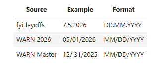
In addition to standardizing the dates, the column headers across all datasets also needed to be normalized.
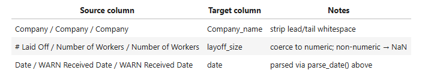
They result the following:
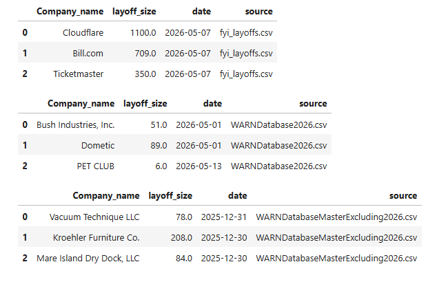
After merging all datasets, the next step focused on harmonizing company names to ensure consistent identification across data sources.
Company Name Harmonization
Company names were converted to uppercase to facilitate matching with ticker symbols. Overlapping records between the FYI and WARN datasets were deduplicated by retaining WARN records (legally mandated filings) and removing duplicate FYI records.
Regex-based string similarity matching was then used to resolve variations in company naming conventions across the source files, ensuring a unique set of company names before assigning ticker symbols.
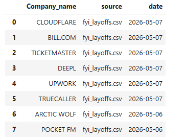
Ticker Assignment and Filtering
Example of the first five rows of the NASDAQ dataset:
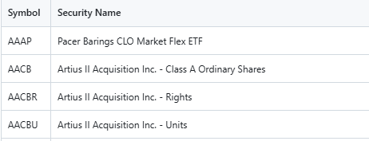
The Symbol column contains the ticker symbols, while the Security Name column contains the corresponding company names.
To simplify the analysis, company names were mapped to their corresponding ticker symbols. The ticker information was obtained from the NASDAQ dataset described earlier. See below the illustration, a new collumn
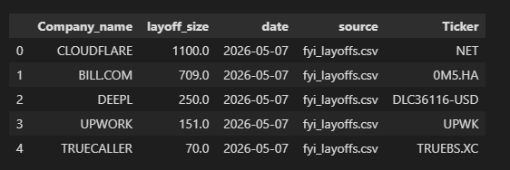
Companies without a valid NASDAQ ticker were excluded. Invalid or duplicate ticker symbols, where multiple companies were associated with the same ticker, were also removed to ensure a one-to-one mapping between each company and its ticker symbol.
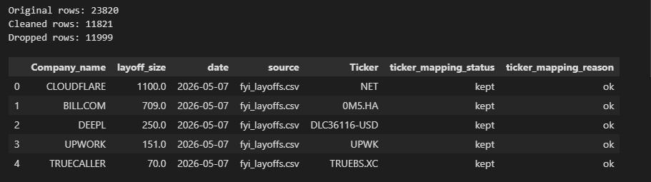
This is an intermediate dataset that can be continuously updated as new reports become available. In this project, quarterly cash flow and income statement data were collected using yfinance and merged with the layoff dataset as financial features for model training.
Financial Feature Extraction & Normalization
Raw yfinance data includes three financial statement categories: balance sheet, cash flow statement, and income statement. Since raw values vary significantly across companies, they were transformed into normalized financial features, including ratios, per-share metrics, and standardized values. This resulted in 347 financial features per company-quarter record with a consistent structure.
Financial features were aligned across datasets using the union of all available features. Missing values were stored as NaN, allowing machine learning models to handle or impute incomplete information while maintaining a consistent feature matrix.
Labeling
The dataset supports two different modeling objectives, each with its own labeling logic:
Quarter-Level Labeling
Records are labeled based on timing proximity to a layoff event. A layoff recorded in company X's Q2 2024 (as an example) filing will label:
layoff_this_quarter = 1for the Q2 2024 rowlayoff_next_quarter = 1for the Q1 2024 row (enabling prediction of imminent events)layoff = 1for both rows (binary classification)
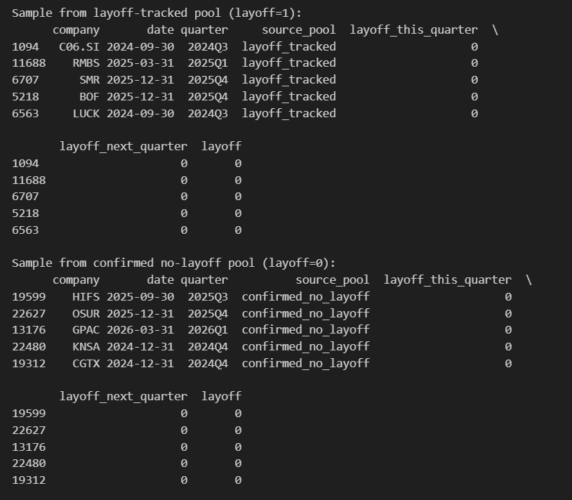
Company-Level Labeling
All quarterly records for a given company receive the same label, regardless of when the layoff occurred:
layoff = 1for all rows from companies with any documented layofflayoff = 0for all rows from confirmed no-layoff companies
Both schemes preserve the source_pool column, enabling auditing of any prediction back to its origin (layoff-tracked or confirmed no-layoff).
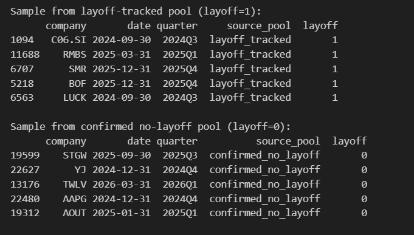
Data Integrity Checks
After merging, the combined dataset was validated to ensure:
- No duplicate (company, date) pairs exist within the merged dataset
- All label columns contain only valid values (0 or 1)
- No ticker overlap remains between the two source pools
- Feature columns are consistent across all rows
These checks confirm that downstream models receive clean, unambiguous training data.
Ticker: A short alphabetic code identifying a publicly-traded company (e.g., ADS = Adidas)
Financial Statement: Quarterly report of company revenue, expenses, assets, and liabilities
Financial Feature: A derived metric or ratio computed from financial statements for predictive modeling
All data processing steps can also be visualized as a flowchart.
graph TD
subgraph PDF_Extraction ["PDF to CSV Pipeline"]
PDF_INPUT[/"data/raw/layoffs.pdf"\]
READ_PDF[Read PDF Content]
PARSE_PDF[Extract Table Data]
SAVE_RAW[Save to folder data/raw]
RAW_CSV[("data/raw/fyi_layoffs.csv")]
end
subgraph Data_Cleaning ["Data Cleaning & Deduplication"]
CLEAN_START([Start Cleaning])
REMOVE_OVERLAP[Remove Overlapping Records]
MERGE_NAMES[Merge Similar Company Names]
STRING_SIMILARITY[Merge Closely Related Strings]
CLEANED_CSV[("cleaned_layoffs.csv")]
end
subgraph Finance_Pipeline ["get_finance_data Pipeline"]
SEARCH_TICKERS[Search Tickers via yfinance.Search]
DROP_MISSING[Drop Rows without Tickers]
TICKERS_CSV[("LAYOFFS_WITH_TICKERS_CSV_PATH")]
subgraph Data_Fetch ["Parallel Data Fetching"]
FETCH_CASHFLOW[Fetch Quarterly Cashflow]
FETCH_FINANCIALS[Fetch Quarterly Financials]
end
CASHFLOW_STORAGE[("CASHFLOW_DIR/*.csv")]
FINANCIAL_STORAGE[("FINANCIAL_DATA_DIR/*.csv")]
end
PDF_INPUT --> READ_PDF
READ_PDF --> PARSE_PDF
PARSE_PDF --> SAVE_RAW
SAVE_RAW --> RAW_CSV
CLEAN_START --> REMOVE_OVERLAP
REMOVE_OVERLAP --> MERGE_NAMES
MERGE_NAMES --> STRING_SIMILARITY
STRING_SIMILARITY --> CLEANED_CSV
CLEANED_CSV --> SEARCH_TICKERS
SEARCH_TICKERS --> DROP_MISSING
DROP_MISSING --> TICKERS_CSV
TICKERS_CSV --> FETCH_CASHFLOW
TICKERS_CSV --> FETCH_FINANCIALS
FETCH_CASHFLOW --> CASHFLOW_STORAGE
FETCH_FINANCIALS --> FINANCIAL_STORAGE
subgraph Main_Project ["Project: layoff-detector (root)"]
START([start_point: generate_layoff])
end
subgraph PDF_Extraction ["PDF to CSV Pipeline"]
PDF_INPUT[/"data/raw/layoffs.pdf"\]
READ_PDF[Read PDF Content]
PARSE_PDF[Extract Table Data]
SAVE_RAW[Save to folder data/raw]
RAW_CSV[("data/raw/fyi_layoffs.csv")]
end
subgraph Data_Ingestion ["Data Ingestion"]
FILE_A[(File fyi_layoffs.csv)]
FILE_B[(File WARNDatabase2026.csv)]
FILE_C[(File WARNDatabaseMasterExcluding2026_.csv)]
CONV_LIST[Convert to List]
SHOW_DATA[Display Data]
PARSE_FORMAT[Parse Format]
end
subgraph Preprocessing ["Data Preprocessing"]
DATE_TRANSFORM[Transform Date: DD.MM.Y to YY.MM.DD]
NORMALIZE[Normalize Data]
JOIN_FILES[Join into Single File]
end
subgraph Data_Cleaning ["Data Cleaning & Deduplication"]
REMOVE_OVERLAP[Remove Overlapping Records]
MERGE_NAMES[Merge Similar Company Names]
STRING_SIMILARITY[Merge Closely Related Strings]
end
subgraph Output ["Final Output"]
FINAL_GEN[Generate Final File]
RESULT[(final_layoffs.csv)]
end
PDF_INPUT --> READ_PDF
READ_PDF --> PARSE_PDF
PARSE_PDF --> SAVE_RAW
SAVE_RAW --> RAW_CSV
RAW_CSV --> FILE_A
START --> FILE_B
START --> FILE_C
FILE_A --> CONV_LIST
FILE_B --> CONV_LIST
FILE_C --> CONV_LIST
CONV_LIST --> SHOW_DATA
SHOW_DATA --> PARSE_FORMAT
PARSE_FORMAT --> DATE_TRANSFORM
DATE_TRANSFORM --> NORMALIZE
NORMALIZE --> JOIN_FILES
JOIN_FILES --> REMOVE_OVERLAP
REMOVE_OVERLAP --> MERGE_NAMES
MERGE_NAMES --> STRING_SIMILARITY
STRING_SIMILARITY --> FINAL_GEN
FINAL_GEN --> RESULT
Upon completion of this step, the data is transformed into the desired format and is ready for further analysis.
Who This Affects
"It's public data" is not an ethics discussion. Name the stakeholders, the risks, and what you actually did to limit harm.
Stakeholders & risk
Who could be affected by this project directly — and how?
False positives may create unnecessary concern and affect career decisions, while false negatives gives a false sense of job security.
Incorrect predictions may damage the companies reputation and diminish employee morale.
Predictions whether correct or incorrect may affect future investments or the stock value.
Customers may interpret a layoff prediction as a sign of financial instability, potentially impacting their trust in the company and their purchasing decisions from said company.
Incorrect predictions may affect job seekers into accepting risky positions or missing out on better opportunities.
Secondary Stakeholders & risk
Who could be affected by this project indirectly — and how?
Families of employees may experience financial stress and emotional distress if a company is predicted to have layoffs.Even if no layoff occurs, the prediction might lead to change of future plans and reduce spending.
A prediction that a company may have layoffs may negatively affect its stock price and cause financial losses for existing shareholders.
Layoff predictions, particularly if given out of context , may create economic uncertainty in communities that rely heavily on a particular employer. Even if no layoffs occur, the perception of potential layoffs may reduce employee spending in the local businesses ,which could lower revenue for local businesses and negatively affect the wider local economy.
How we limited harm
What concrete steps limited harm
We exclusively used publicly available company level financial data from yfinance,WARN and layoffs.fyi to train our models. We did not collect or use any employee-level data, sensitive information, or personally identifiable information.
All results are presented as model estimations and not confirmed future events. The Limitations of the models and the dataset are discussed in the findings and analysis sections.
The intended use of the model is to support decision-making and should not be used to make decisions about financial matters on their own.
What You Did, What It Shows
Justify the method, then be honest about the results — including what they don't tell you.
Our approach
To address our reasearch questions, we formulate layoff prediction as supervised binary classification (layoff or non-layoff) using quarterly company financial data, including balance sheet, financial data and cashflow. After processing, the dataset contains approximately 30,000 company-quarters across 5,381 companies. The dataset for the first research question (RQ1) is balanced, with approximately 12,047 positive layoff rows and 17,971 negative non-layoff rows. However, the dataset for the second research question (RQ2) is more imbalanced, with approximately 1,205 positive layoff rows and 28,813 negative non-layoff rows. Each row in our dataset represents a single company in a single quarter, with features derived from the company's financial statements and the target variable indicating whether a layoff occurred in that quarter or the next.
We compared six supervised learning algorithms representing both linear and non-linear families: Logistic Regression, Random Forest, Gradient Boosting, XGBoost, SVM, KNN, and a Decision Tree. Since the relationship between financial indicators and layoffs is unlikely to be purely linear, tree-based ensemble methods were included to capture more complex interactions among the features.
All models are trained using the same preprocessing pipeline to ensure a fair comparison.
Missing numberical values are imputed with the median value for each feature, and binary missingness indicators are added because
the absence of financial data itself may contain helpful information. Moreover, the features no variance are dropped,
and stadardization is applied to ensure that all features contribute equally to the model's learning process.
Model performance is evaluated using stratified 5-fold cross-validation together with a held-out test set. The dataset is first divided into training and test sets, with the test set kept serparate and used only for the final evaluation. This ensures that the reported performance metrics reflect the model's ability to generalize to previously unseen data. The training set is then split into five stratified folds. During cross-validation, the model is trained on four folds and validated on the remaining fold, and this process is repeated five times until each fold has served as the validation set once. The performance metrics are averaged across the five iterations, providing a more robust estimate than a single train-validation split. Stratification preserves the original class layoff-to-non-layoff ratio in each fold, which is particularly important because layoffs account for only about 4% of the observations.
Given this class imbalance, model performance is accessed using both the ROC-AUC and Precision-Recall AUC metrics. While ROC-AUC provides an overall measure of the model's ability to discriminate between the classes, PR-AUC is more informative in imbalanced settings, as it focuses on the model's performance in predicting the minority class (layoffs).
To prevent data leakage, all variables related to the target label, including the company's name, tickers, and any other identifiers, are excluded fromt he feature set before training. In addition, the classification threshold is optimized using the F-beta score with beta=0.5, which prioritizes precision over recall to minimize false positives. Although this may reduce the number of detected layoffs, it produces prediction that are more reliable for users and can be adjusted depending on the intended applications.
Results, with appropriate skepticism
RQ1: For the first research question with approximately 30,000 company-quarters across 5,381 companies, held up under scrutiny. XGBoost reached a test ROC-AUC of 0.975 (accuracy 0.92, precision 0.91 / recall 0.89 on the layoff class), and the features driving that performance — liquidity and leverage signals such as net income from continuing operations, payables & accrued expenses, current liabilities, accounts receivable, and total capitalization — line up with financial intuition rather than looking like an artifact of the pipeline.
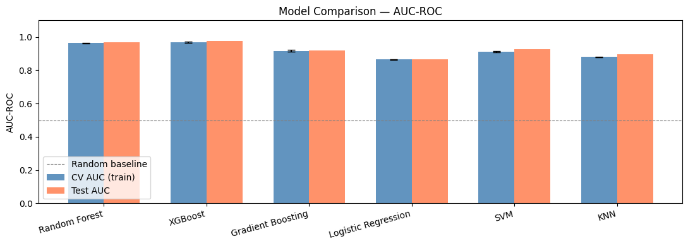
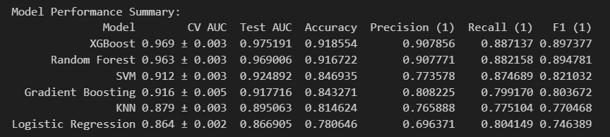
RQ2 is the harder and more useful question: will a layoff be announced in the same or next quarter, the framing that would actually let someone act early. Because true positives are only ~4% of rows, accuracy is a misleading headline number here (~0.95, driven almost entirely by the majority class). Our best model, Random Forest, reached a test ROC-AUC of 0.87, but precision and recall on the layoff class itself were only 0.41 and 0.28 (F1 0.33) before threshold tuning — a much weaker result than the topline ROC-AUC suggests.
Read plainly: financial fundamentals carry a real, learnable signal for "does this company's profile resemble one that has had layoffs" — but we can't yet reliably answer "will it happen in the next one to two quarters" from public financials alone. Many real layoff triggers — leadership decisions, M&A, strategic pivots — simply aren't visible in balance-sheet numbers months in advance. Our latest pipeline iteration tries to trade recall for precision via threshold tuning, on the view that a confident false alarm damages trust more than a missed one, but that run currently fails before producing metrics: the imputer is fed a raw ticker column and errors out trying to average a string. Until that's fixed, the untuned RQ2 numbers above are the ones to trust. Our model also shows that the most important features for predicting layoffs are related to liquidity and leverage, which align with financial intuition. The top 30 most important features for the Random Forest model are shown in the figure below.
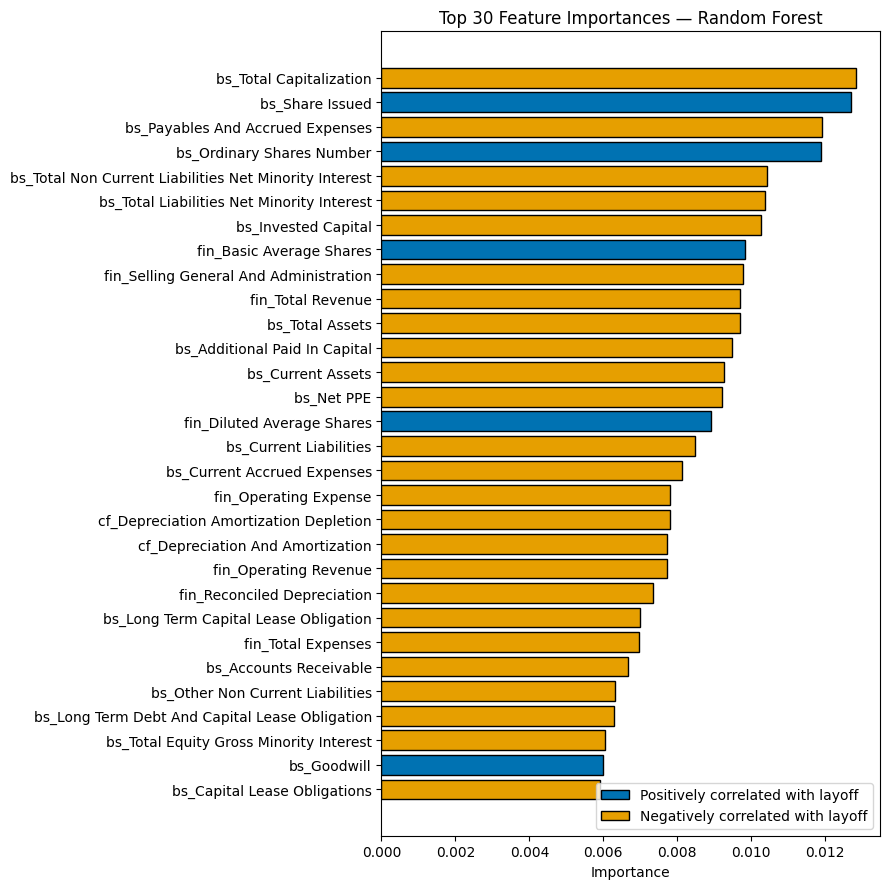
SF: it would be nice to explain the top 10 features of XGBoost here
Show, Don't Just Tell
A picture should be worth 1000 words here — clear, labelled, and honest about what it shows. Drop your charts and screenshots into the slots below.
RQ1: Based on publicly available information, is it possible to predict whether a company had or is likely to have layoffs?
Yes!
We are able to predict a companies likelihood of having layoffs with 97% accuracy. Accuracy in this context is represented by the ROC- AUC which depicts true positive + true negative / total possible outcomes. Below is an image showcasing ROC- AUC accuracy based on the top performing model; XGBoost. For a more detailed view on how we got to choosing this model, please refer to the analysis section.
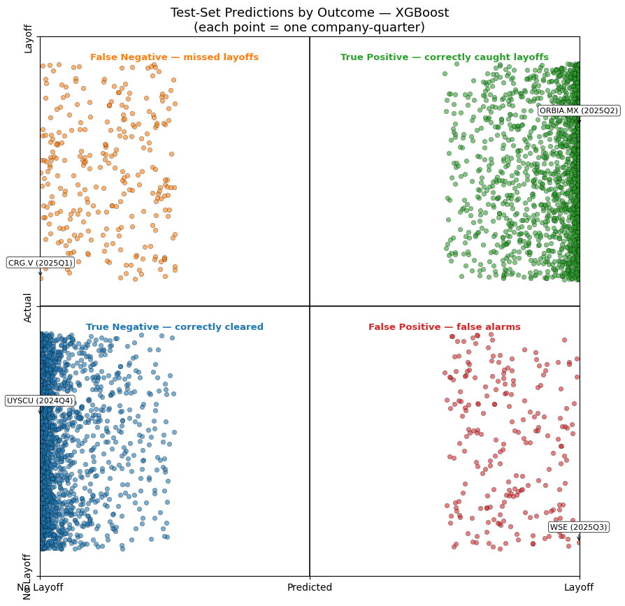
This image is a represenative depction of the XGBoost models accuracy. Every point is a company in a given time period with their respective predictions. The X-axis represents the trained models predictions, while the Y-axis is representative of the actual outcomes from the collected data. Following the resulting 97% accuracy of the XGBoost model, the image demonstrates the majority of the model's prediction aligns with the actual outcome true positive true negative (add actual values). This means only 3% of the outcomes were false positives or false negatives.
The top 10 features for the XGBoost model are shown below:
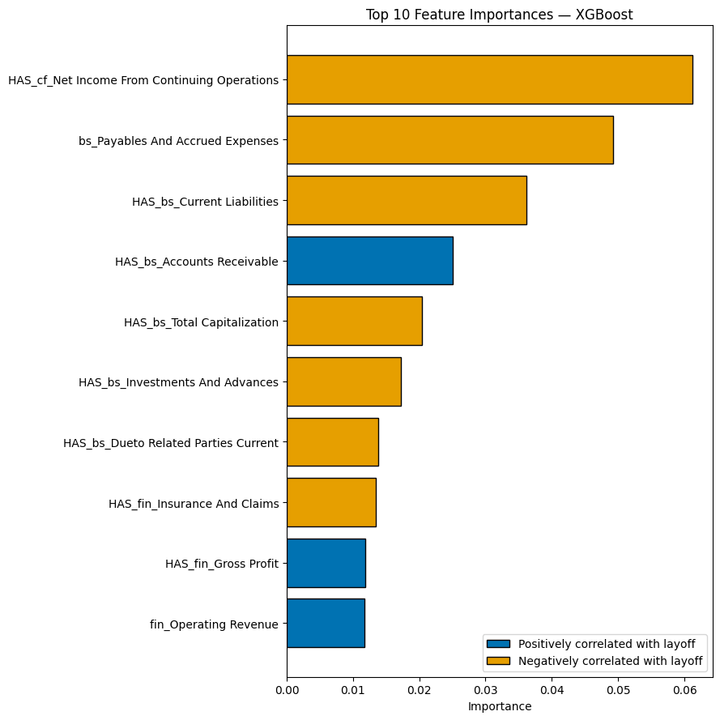
As can be seen, most features are presence indicators, since the absence of certain information can itself provide valuable insight.
RQ2: If so, is it possible to predict it in a 3-6 month timeframe?
No, not reliably with the data available
There were approximately 20 companies without a record of layoff for every company with a record of layoff. This means that the dataset was highly imbalanced, which made it difficult for the model to learn the patterns associated with layoffs.
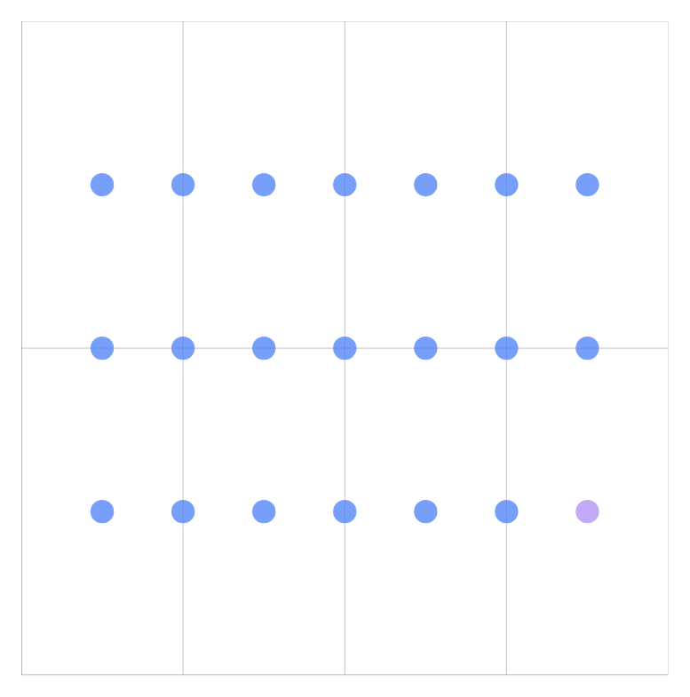
Our best performing model, Random Forest, achieved a ROC-AUC of 0.87, but the precision and recall on the layoff class were only 0.41 and 0.28. meaning that approximately four out of every ten predicted layoffs were correct and it identified fewer than 3 out of every ten actual layoffs. This is not a reliable enough prediction to be useful in practice.
Our other model outputs are shown below:
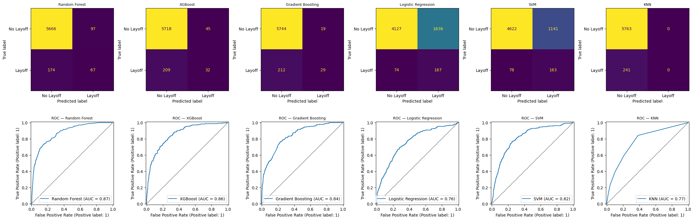
Despite having high ROC-AUC values, the models performed poorly on the minority class, layoffs, because of the 20:1 imbalance in the dataset. The seemingly strong performance is by predominantly predicting the majority class outcome "no layoffs" while failing to identify actual layoffs.
Therefore the results suggest that layoffs cannot be reliably predicted in a 3-6 month timeframe with the available data.